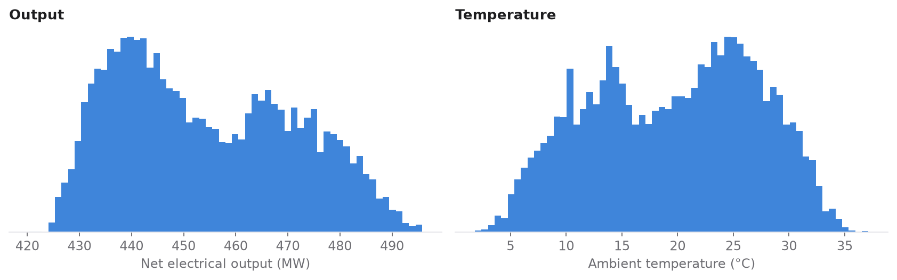
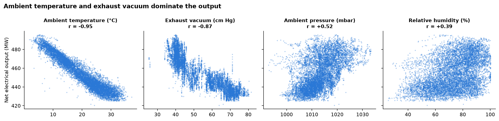
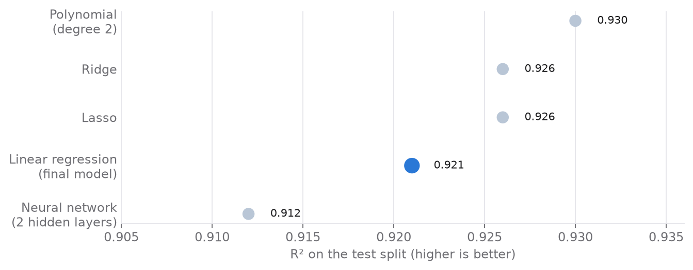
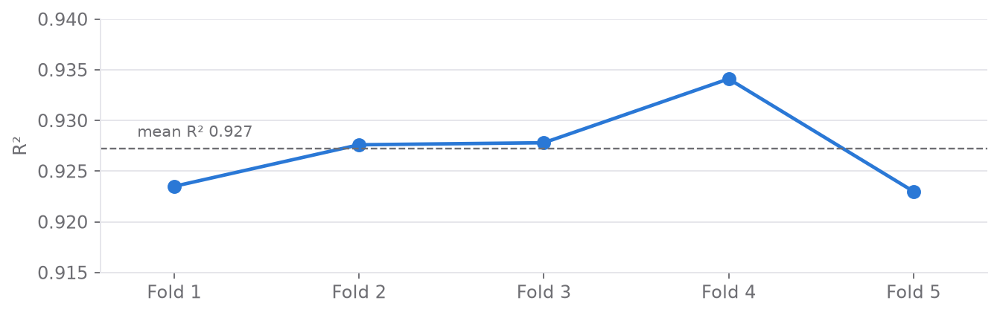

The task
The study builds on Tüfekci (2014). The goal is to estimate the plant's net electrical output (PE) from four ambient variables: ambient temperature (AT), exhaust vacuum (V), atmospheric pressure (AP) and relative humidity (RH).
Two datasets were available. I used the training set of 8,568 observations to explore the data and compare regression techniques. I then applied the best model to an independent test set of 1,000 observations. The records span 2006–2011 but contain no time variable, so time-series analysis was not possible.
I ran the analyses in Python and in IBM SPSS Statistics, and cross-checked the results between the two tools.
Exploratory analysis
Before any modelling, the distribution of output shows two peaks, around 440 MW and 470 MW. Ambient temperature has two peaks as well, around 13 °C and 25 °C. These most likely reflect winter and summer operation. Without dates, that hypothesis can be neither confirmed nor rejected, but it is worth keeping in mind when interpreting the model.

Temperature and exhaust vacuum move strongly with output (r = −0.95 and −0.87). Pressure moves with it more moderately (r = 0.52), and humidity only weakly (r = 0.39). At this stage these are correlations, not causal relationships.

Cleaning removed 36 duplicate rows and the values outside 1.5 × the interquartile range, leaving 8,440 observations. All variables are measured on a ratio scale, so no transformation or dummy coding was needed.
From one variable to a full model
Simple regressions with one predictor each show how much of the output each variable explains on its own. Temperature alone explains 90%, but none of the single-variable models is enough.
| Predictor | Slope | R² |
|---|---|---|
| Ambient temperature (AT) | −2.17 MW per °C | 0.899 |
| Exhaust vacuum (V) | −1.17 | 0.757 |
| Atmospheric pressure (AP) | +1.49 | 0.266 |
| Relative humidity (RH) | +0.46 | 0.150 |
For the multivariable model I compared the four variable-selection procedures in SPSS: forward, backward, stepwise and enter. All four converged on the same model with all four predictors. Variables entered in the order AT → RH → V → AP, and the final model reached R² = 0.928 with a standard error of 4.59 MW. Every coefficient is significant (p < 0.001).
Comparing model families
Beyond ordinary least squares, I tested polynomial terms, regularised regressions and a neural network with two hidden layers, built in TensorFlow and trained for 100 epochs.

- Polynomial terms (15 predictors) gave the highest test R² of 0.930, but the terms have no clear physical interpretation.
- Lasso and ridge regularisation performed on a par with plain regression (R² = 0.926), so overfitting was not a concern.
- The neural network did not beat the linear model (R² = 0.912, RMSE 5.07 MW). This does not mean that a differently designed network could not do better.
The final model
Given the small differences in accuracy, I chose the linear regression for its interpretability:
PE = 435.03 − 1.967·AT − 0.236·V + 0.081·AP − 0.157·RH
Holding the other conditions constant, every additional °C of ambient temperature reduces output by about 2 MW. Higher exhaust vacuum and humidity also lower output, while higher pressure raises it slightly. On the training data the model reaches R² = 0.929, an MAE of 3.64 MW and an RMSE of 4.55 MW.
Validation
Cross-validation. I ran 5-fold cross-validation to rule out the possibility that a lucky train/test split drove the results. The folds stay in a narrow band (mean R² = 0.927, mean MSE = 21.1), with no outlying fold.

Independent sample. I applied the model to the 1,000 held-out observations. The mean predicted output was 454.50 MW on the training data and 453.18 MW on the independent sample. An F-test comparing the residual variances of the two samples gave F = 1.016, so the variances are effectively equal. The homoscedasticity assumption holds, and the model generalises to unseen data.
Conclusions
The four ambient variables give a reliable estimate of the plant's electrical output with a simple, transparent linear model. I confirmed its validity with independent methods: cross-validation, an independent sample and a test of equal residual variances. Temperature is by far the most important factor.
Limitations. The data contain no timestamps, so effects such as equipment ageing could not be modelled. Domain-level engineering knowledge was outside the scope of this data science study.
Further work
In a later replication on the public dataset, tree ensembles (gradient boosting) reduced the error further, to R² = 0.965. SHAP values confirmed temperature as the dominant driver. The code is in the repository.